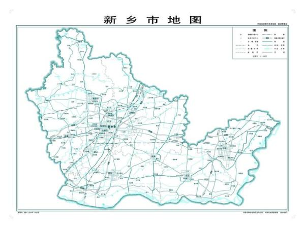
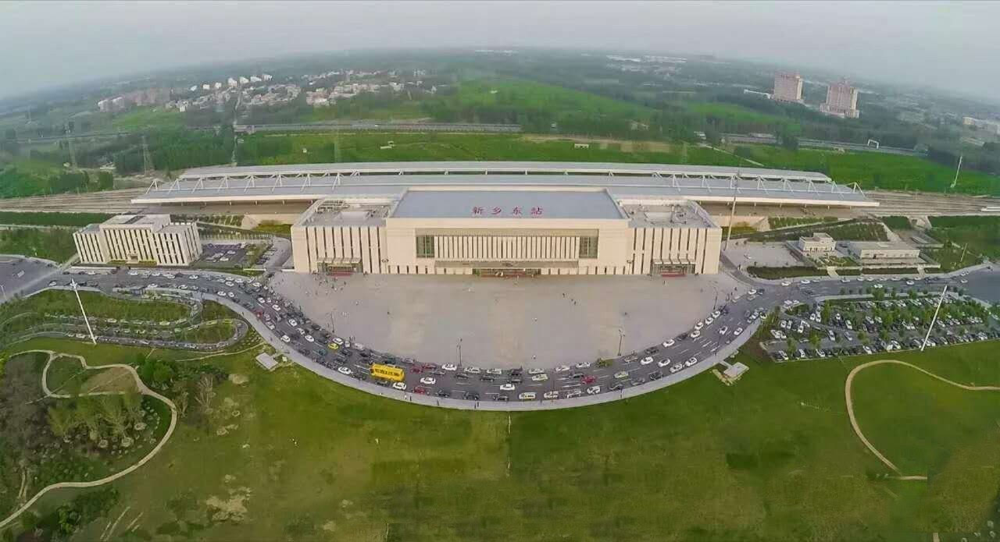

更多 |
 |
||||
| 网站首页 | 特色景点 | 特色美食 | 著名人物 | 历史文化 |
|
遇见新乡 ------------------------------------------------------------- 新乡市，河南省辖地级市，位于河南省北部，南临黄河，与郑州、开封隔河相望；北依太行山与鹤壁、安阳毗邻；西连焦作并与山西接壤；东接油城濮阳并与山东相连，总面积8249平方千米。 截至2022年，新乡市辖4个市辖区、5个县、代管3个县级市。截至2022年末，新乡市常住人口为616.6万。 新乡市属于华北板块，地处黄河、海河两大流域，地势北高南低，北部主要是太行山山地和丘陵岗地，南部为黄河冲积扇平原，平原占新乡市土地总面积的78%。新中国建国初期新乡为平原省省会，是豫北地区重要的中心城市，中原地区重要的工业城市、中原经济区及中原城市群核心区城市之一，豫北的经济、教育、交通中心。2023年，被评为三线城市。新乡历史悠久，仰韶文化、龙山文化都有遗址留存，是《诗经》重要发源地之一，牧野之战、张良刺秦、陈桥兵变等重大历史事件都发生在这里，境内有国家级文保单位20处，国家5A级景区1家、4A级景区10家。 新乡市是郑州都市圈重要组成部分、豫北地区首批国家公路运输枢纽城市，是全国文明城市、国家卫生城市、国家园林城市、国家森林城市、国家知识产权示范城市、国家循环经济示范城市、全国农村改革试验区、郑洛新国家自主创新示范区。2022年，新乡市完成地区生产总值3463.98亿元，位居全省第6位，同比增长5.3%，高于全省平均水平2.2个百分点，位居全省第1位。 |
||
| 
|
截至2022年12月，新乡市辖9个县区、1个城乡一体化示范区、2个国家级开发区，代管3个县级市，分别是卫滨区、红旗区、牧野区、凤泉区、辉县市、卫辉市、长垣市、新乡县、获嘉县、原阳县、延津县、封丘县。 |
||
|
|||
|
位置境域 新乡市地处中原腹地，河南省北部，地理坐标为东经113°23′～115°01′，北纬34°53′～35°50′之间，中心位于北纬35°18′，东经113°54′，南临黄河，与郑州市、开封市隔河相望；北依太行，与鹤壁市、安阳市毗邻；西连太极故里焦作市，与晋东南接壤；东接油城濮阳市与鲁西相连。总面积8249平方千米。 地质 新乡市属于华北板块，横跨新华夏系北北东向构造第二沉降带中段的华北坳陷与第三隆起中段的太行隆起两个一级构造体系单元，除北部太行山地及山麓一带地势自晋豫边界向东南呈台阶式下降外，南部广大黄河冲积平原地势西、南高而东、北低，总体自西南向东北倾斜。 新乡市区内分布有山地、丘陵、山间盆地和平原等地貌类型，呈北东－南西向带状分布。其中受新华夏系太行山前深大活动断裂带控制，北部京广铁路以西为新生代以来隆起的太行山区，地形复杂，最高点十字岭海拔1732米，为基岩出露区，占全市面积的23%；岩石类型主要为太古界片麻岩、元古界石英砂岩和古生界的海相碳酸盐岩；受地形地貌和岩组的影响，在岩溶裂隙发育良好的适宜部位含有丰富的岩溶裂隙水，其它或因缺少含水层或因地下水迳流漏失，富水性一般较差。南部为新生代以来坳陷下沉的冲洪积平原区，地形平坦，约占全市面积的77%，主要为洪冲积松散堆积物覆盖，多为砾石混合成层或砂质土、粘性土互层。 新乡市区域构造活动强烈，以北东向断裂构造为主，主要分布于市境的东部和西部，既是断裂带，又是地震带。东部的聊城—兰考断裂带内有东濮坳陷，西部的太行山前断裂内有汤阴地堑，二者之间为华北坳陷沉降区内地震活动微弱的内黄隆起；北西向断裂次之，主要有新乡—商丘断裂和峪河—新乡断裂；此外还有东西向的盘古寺—新乡断裂。受构造活动的影响，京广铁路以西及北部山区处于地震活动较微弱的地带；山前广大平原区属于华北坳陷，处于华北地震区河北平原地震带的南端，地震活动较为频繁和强烈。 气候 新乡市属暖温带大陆性季风气候，四季分明，冬寒夏热，秋凉春早，历年平均气温14℃。7月最热，平均27.3°C；1月最冷，平均0.2°C 。新乡市境年均降水量为573.4毫米，各县间变幅为549.9～644.4毫米。少雨中心在原阳，多雨中心一在西北部的辉县山区，二在东部平原的长垣。降水量在季节分配上极不均匀，大致与冬、夏季风进退相一致。市境霜冻初日多在10月下旬，终日多在4月上旬。年均无霜期为205天。2021年，新乡市年平均气温15.8℃。平均年降水量1377.7毫米。 水文 截至2020年11月，新乡市常住人口625.19万人。根据第七次人口普查数据，截至2020年11月1日零时，新乡市常住人口为6251929人。 新乡市属典型少数民族杂散居地区，具有大分散小聚居的特点。2019年，新乡市有少数民族成份44个，人口67255人，回族人口占88.21％，其它人口较多的少数民族是蒙古族、满族、朝鲜族、苗族、彝族、壮族、维吾尔族等。截至2022年末，新乡市常住人口616.6万人，比2021年末减少0.5万人。全市常住人口中男性310.9万人，占50.42%；女性305.7万人，占49.58%；性别比为101.68。 2021年，新乡市地区生产总值3232.53亿元，比上年增长6.6%，两年平均增长4.7%。其中，第一产业增加值292.48亿元，增长2.9%；第二产业增加值1442.47亿元，增长4.4%；第三产业增加值1497.58亿元，增长9.5%。三次产业结构为9:44.6:46.4。全年人均地区生产总值52028元，比上年增长7.2%。 2022年，全市完成地区生产总值3463.98亿元，位居全省第6位，同比增长5.3%，高于全省平均水平2.2个百分点，位居全省第1位。分产业看，第一产业增加值339.12亿元，同比增长5.5%；第二产业增加值1549.5亿元，同比增长7.2%；第三产业增加值1575.37亿元，同比增长3.4%。 第一产业 新乡市是中国重要的商品粮基地和优质小麦生产基地，优质专用小麦种植面积占小麦种植面积的比重超过80%，被评为全国粮食生产先进市，还是河南省畜牧生产加工基地，金银花等中药材生产基地。 第二产业 新乡市是中原地区重要的工业基地，拥有41个行业大类中的33个，是中国电池工业之都、国家新能源电池及电池材料产业区域集聚发展试点城市、国家新型电池及材料产业基地、新能源汽车推广应用城市、生物医药特色产业基地和起重机械产业基地，有制冷、生物与新医药、电池及新型电池材料、特色装备制造、煤化工、汽车及零部件等六大战略支撑产业，纺织、食品、造纸、建材、能源电力五大传统优势产业。 第三产业 新乡市自古以来就是晋冀鲁豫接壤地区的商品集散地。现代物流、仓储和邮政业、批发零售业、旅游业、金融业和房地产业等构成新乡服务业的支柱产业。 交通运输新乡市是豫北地区的国家公路运输枢纽城市，境内有京广—广深港高铁、京广铁路、新菏铁路、新月铁路等四条铁路，107国道，京港澳、大广、济东及正在建设的新晋、鹤辉等五条高速公路穿境而过。距离新郑国际机场及郑州航空港区车程约1小时，乘京广高铁2—3小时左右可达北京、武汉；7—8小时可达广州、深圳。 2021年，新乡市货物运输总量1.52亿吨，比上年增长11.5%。货物运输周转量480.32亿吨千米，增长33.3%。旅客运输总量0.25亿人次，下降26.3%。旅客运输周转量15.65亿人千米，下降20.6%。年末新乡市铁路营业里程354千米，其中高铁79千米。高速公路通车里程268.4千米。 2021年，新乡市民用汽车保有量134.31万辆，比上年末增长5.7%，其中私人汽车124.6万辆，增长5.8%。民用轿车保有量71.21万辆，增长8.1%，其中私人轿车69.12万辆，增长8.2%。 铁路运输 新乡铁路南北大动脉京广铁路和石太铁路在此交汇，新月铁路、107国道及京港澳、大广、济东高速穿境而过。京广铁路、新焦铁路、新月铁路、新荷铁路、石太铁路，京广—广深港高铁、郑新城际铁路（规划在建中）、郑济高铁纵横交汇，有新乡火车站、新乡东站，新乡南站三大火车站。 新乡站位于河南省新乡市卫滨区平原路1号，始建于1905年。距离北京西站619千米，距离广州站1685千米，隶属郑州铁路局管辖，为一等站。站内5台11线，日到发客车152次。可以直通全国除福州、台北、西宁、拉萨外的所有省会、直辖市城市。 新乡东站，即石武铁路客运专线以及郑济高铁新乡东站，于2012年12月26日正式启用。位于河南省新乡市牧野区荣校东路，107国道以东，京港澳高速以西附近，车站性质定位为始发站。是河南省郑州市以北的重要车站，车站站场规模达到6台15线，站房占地总面积近1.7万平方米，配备座椅1326个，最大可容纳3000名旅客同时候车，通往市区有8条公交线路（9路、19路、24路、29路、35路、56路、57路、66路）；通往经开区有1条公交线路（58路）；通往凤泉区有1条公交线路（69路）。 到“十三五”末，新乡市铁路网形成“两纵（京广高铁、京广铁路）一横（新月铁路－新菏铁路）”布局，铁路营业里程达354千米，其中高速铁路79千米。 公路客运 根据2022年新乡市交通运输局信息显示，107国道、京港澳高速、济东高速、大广高速公路及正在规划建设的新（新乡）—陵（山西陵川）等高速公路穿境而过。 截至2020年底，新乡市普通干线公路总里程达到1590千米，其中二级及以上公路占比达87.1%，高于全省平均水平19.3个百分点，公路技术状况指数（MQI）为89.2，农村公路总里程达到11686千米，其中二级及以上公路占比9.8%。新乡市二级及以上客运站达到9个，其中一级站5个。新乡市高速公路总里程268千米，形成“两纵（京港澳高速、大广高速）两横（菏宝高速、晋新高速）”布局。  |
|||